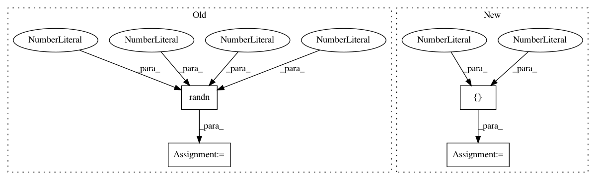

b2074ddf9d8bc2069d66976fea58a52f40238496,pretrainedmodels/nasnet.py,,,#,448
Before Change
model = NasNetLarge()
input = Variable(torch.randn(2,3,331,331))
output = model(input)
print(output.size())
After Change
import torch.nn.functional as F
from torch.autograd import Variable
pretrained_settings = {
"nasnetalarge": {
"imagenet": {
"url": "http://webia.lip6.fr/~cadene/Downloads/nasnetalarge-431029df.pth",
"input_space": "RGB",
"input_size": [3, 331, 331],
"input_range": [0, 1],
"mean": [0.5, 0.5, 0.5],
"std": [0.5, 0.5, 0.5],
"num_classes": 1000
},
"imagenet+background": {
"url": "http://webia.lip6.fr/~cadene/Downloads/nasnetalarge-431029df.pth",
"input_space": "RGB",
"input_size": [3, 331, 331],
"input_range": [0, 1],
"mean": [0.5, 0.5, 0.5],
"std": [0.5, 0.5, 0.5],
"num_classes": 1001
}
}
}
class MaxPoolPad(nn.Module):
def __init__(self):
In pattern: SUPERPATTERN
Frequency: 3
Non-data size: 4
Instances
Project Name: Cadene/pretrained-models.pytorch
Commit Name: b2074ddf9d8bc2069d66976fea58a52f40238496
Time: 2017-11-16
Author: remi.cadene@icloud.com
File Name: pretrainedmodels/nasnet.py
Class Name:
Method Name:
Project Name: cornellius-gp/gpytorch
Commit Name: 7ec8073d76fd15dceb93d663f9722f1125b0e74a
Time: 2019-03-18
Author: gpleiss@gmail.com
File Name: test/lazy/test_sum_lazy_tensor.py
Class Name: TestSumLazyTensorMultiBatch
Method Name: create_lazy_tensor
Project Name: opencv/opencv_extra
Commit Name: 191e716d801665bab599ca81d3d7ef10445fcdbd
Time: 2020-02-15
Author: gdp.1807@gmail.com
File Name: testdata/dnn/onnx/generate_onnx_models.py
Class Name:
Method Name: